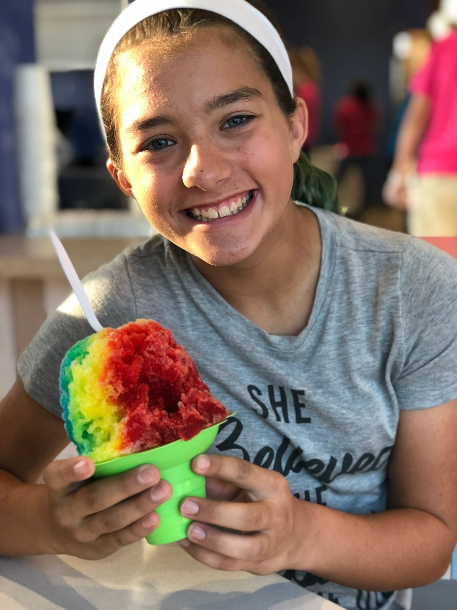

Visit Mangonadas By MLB on the bay
A dessert truck at Bayfront Park on the downtown seawall, known for the Traditional Mangonada and the Pina Loca.
Address: 1590 N Shoreline Blvd, Corpus Christi, TX 78401
Hours: Sunday, Wednesday, and Thursday 12:00 PM to 7:00 PM, Friday and Saturday 12:00 PM to 8:00 PM. Monday and Tuesday are not listed.
Monday and Tuesday hours are not listed, so call to confirm before visiting on those days.
Phone: (361) 695-0056
Gallery

All gallery photos are stock photos, labeled as such. They show the kind of work and setting described on this page, not this business.
Contact
Mangonadas By MLB on the bay serves Corpus Christi, TX. Questions? Call (361) 695-0056.